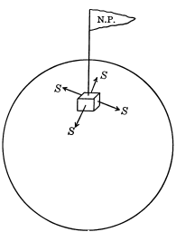

| PCC | Mahmud | Statistics | statmania.info |
Who is better: Sayem or Siyam?
| Exam | Sayem | Siyam |
|---|---|---|
| Exam-1 | \(\frac{63}{90} = 70 \%\) | \(\frac{8}{10}=80 \%\) |
| Exam-2 | \(\frac{4}{10} = 40 \%\) | \(\frac{45}{90} = 50 \%\) |
Who is really better?
| Exam | Sayem | Siyam |
|---|---|---|
| Exam-1 | \(\frac{63}{90} = 70 \%\) | \(\frac{8}{10}=80 \%\) |
| Exam-2 | \(\frac{4}{10} = 40 \%\) | \(\frac{45}{90} = 50 \%\) |
| Combined | \(\frac{67}{100} = 67 \%\) | \(\frac{53}{100} = 53 \%\) |
| Year | Jeter | Justice |
|---|---|---|
| 1995 | \(\frac{12}{48} = 0.25\) | \(\frac{104}{411}=0.253\) |
| 1996 | \(\frac{183}{582} = 0.314\) | \(\frac{45}{140} = 0.270\) |
| Year | Jeter | Justice |
|---|---|---|
| 1995 | \(\frac{12}{48} = 0.25\) | \(\frac{104}{411}=0.253\) |
| 1996 | \(\frac{183}{582} = 0.314\) | \(\frac{45}{140} = 0.321\) |
| Combined | \(\frac{195}{630} = 0.310\) | \(\frac{149}{551} = 0.270\) |
| Stone | Treatment A (Open Surgery) |
Treatment B (Puncture) |
|---|---|---|
| Small | Group 1 \(\frac{81}{87} = 93 \%\) |
Group 2 \(\frac{234}{270}=87\%\) |
| Large | Group 3 \(\frac{192}{263} = 73\%\) |
Group 4 \(\frac{55}{80} = 69 \%\) |
| Stone | Treatment A (Open Surgery) |
Treatment B (Puncture) |
|---|---|---|
| Small | Group 1 \(\frac{81}{87} = 93 \%\) |
Group 2 \(\frac{234}{270}=87\%\) |
| Large | Group 3 \(\frac{192}{263} = 73\%\) |
Group 4 \(\frac{55}{80} = 69 \%\) |
| Both | \(\frac{273}{350} = 78\%\) | \(\frac{289}{350} = 83 \%\) |
Can you make a square house with windows on all four sides, each window having a view to the south?

Then to which side of Russia is USA?
Can a man set out from his house, walk five miles due south, five miles due west, and five miles due north-and find himself back home?
| Year | $150 Yearly | New Salary | $50 Half-yearly |
|---|---|---|---|
| 1st | 500+500=1000 | 1150 | 500+550=1050 |
| 2nd | 575+575=1150 | 1300 | 600+650=1250 |
| 3rd | 650+650=1300 | 1450 | 700+750=1450 |
| 4th | 725+725=1450 | 1600 | 800+850=1650 |
| 5th | 800+800=1600 | 1750 | 900+950=1850 |
A bottle and its cork cost together $1.10. The bottle costs a dollar more than the cork. How much does the bottle cost?